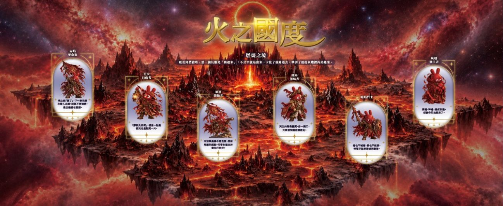
火之國度
燃燒之境・行動 反抗 重生 熱血
情緒來時，第一個反應是動起來。像火一樣來得快、燒得旺，能照亮別人，也記得讓自己偶爾休息。
國際扶輪 3522 地區 主辦
2026
11 月 14 日（六）– 15 日（日）・華山文創園區
一場室內的情緒教育展，一場戶外的健康家庭日。兩個獨立但互相串聯的服務計畫，邀請扶輪社友、寶眷與所有民眾一起參加。免費入場。
兩個活動，一份心意
健康家庭日的活動結餘，將全額捐贈「台北少年觀護所收容人心理治療服務計畫」。這個計畫就展示在情緒教育展的「被接住的心，會找到回家的路」展牆上。
怎麼走
五站旅程
五個問題連起來，就是這個展想說的事：接受當下的自己。
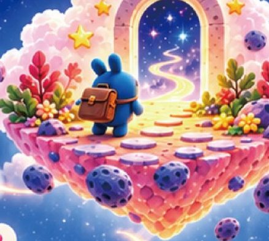
1認識此刻的自己
情緒星球 人格測驗
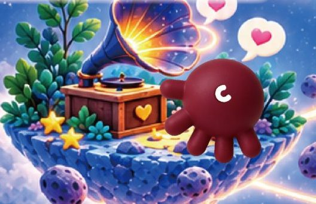
2說出心事，聽見故事
忠孝扶青社 情緒留聲機
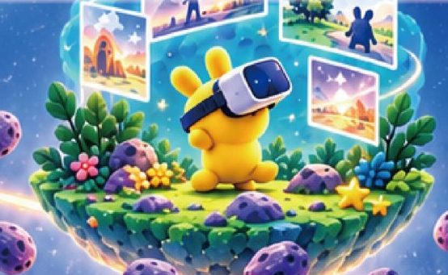
3是什麼，塑造了今天的你
Wake Up Lab VR 情緒體驗
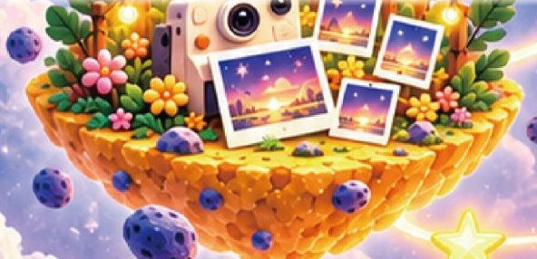
4為迷途的孩子，留下持續的影響
拍照牆・少觀所服務計畫
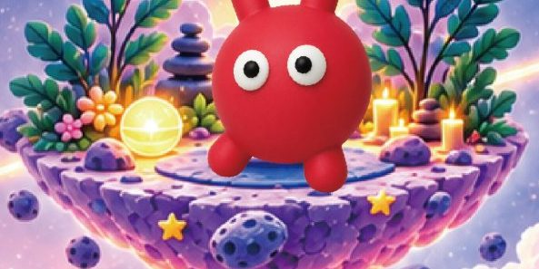
5用身體內觀感受，釋放情緒
瑜珈・講座・情緒互動劇場
第一站｜情緒星球
16 個小問題，從共感、孤獨、行動、壓抑、理想、情緒強度六個方向，找到此刻最接近你的角色。你的星球會移動，每隔一段時間回來測，都是和當下的自己重新打招呼。

燃燒之境・行動 反抗 重生 熱血
情緒來時，第一個反應是動起來。像火一樣來得快、燒得旺，能照亮別人，也記得讓自己偶爾休息。
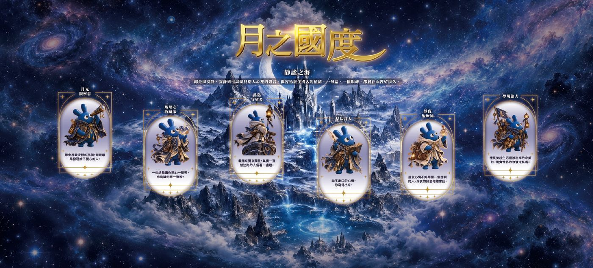
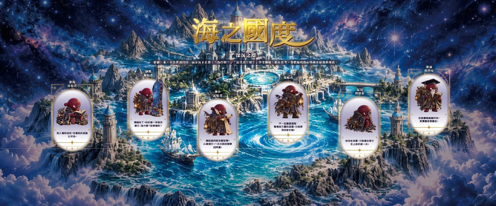
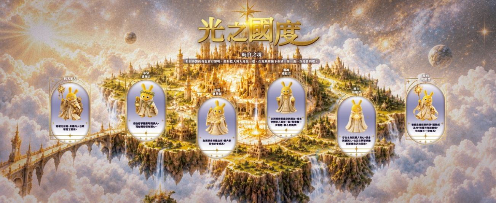
純白之境・希望 連結 治癒 光明
相信再黑的夜也會有黎明，常常是替大家打氣的那個人。你不需要永遠發光，偶爾暗下來，也仍然是你。
展場內有「角色卡任務」：每走完一站，就可以多挑一張角色卡，送給自己，也送給你想陪伴的人。
合作展區
第二站｜國際扶輪 3522 地區忠孝扶青社
心裡的聲音，值得被聽見。
第三站｜Wake Up Lab 沉浸式情緒策展
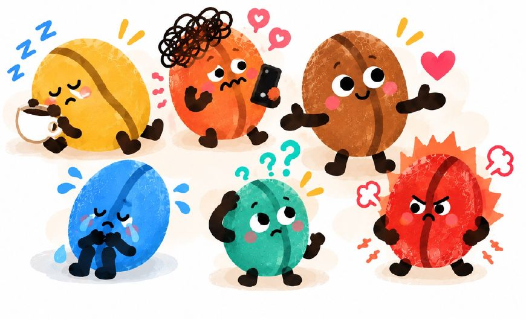
牽起一條紅線，探索那些悄悄影響你的故事與關係。
投下一顆咖啡豆，為此刻的自己，留下一個位置。
戴上 VR，走進熟悉的日常情境，看看不同選擇會帶來什麼感受。
如果心情也需要被照顧，你會為今天的自己開出什麼處方？
同一個問題，不同的答案。和家人交換想法，發現彼此不曾說出口的心聲。
第五站｜Inside Yoga Taipei 與講師群
動過之後靜下來，你會更清楚自己的樣子。
第四站｜留下
台北美仁扶輪社 × 法務部矯正署臺北少年觀護所｜青少年心理療癒計畫
在土城的臺北少年觀護所裡，住著一群暫時迷了路的孩子。他們說不出口的委屈、沒有地方放的憤怒，常常被誤解成叛逆。行為只是表面，情緒才是線索。
2020 年起，美仁扶輪社的社友走進觀護所，一次又一次坐下來，好好聽孩子說話。我們聽見三個最深的需要：讓情緒有出口、讓關係重新接起來、讓孩子相信自己還能回到校園與社會。
我們選了一條比較溫柔的路：六堂團體課程，從團隊合作、自我控制到情緒管理與建立自信，再加上一對一的心理陪伴。這份心意跨越國界，臺灣、日本與德國的扶輪夥伴一起撐起守護。
療癒不是上完幾堂課就結束，而是種下一顆種子。孩子學會溫柔對待自己，也更懂得溫柔對待別人。每一顆被好好接住的心，將來也可能去接住另一顆心。
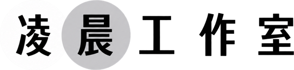
原創互動劇場｜11/15（日）舞台演出當我們不急著判斷，
才有機會看見彼此。
一座故障的電梯，讓一個準備離家的女孩，和一位急著接女兒的媽媽，暫時停了下來。從爭執到傾聽，她們開始發現：自己說出口的，並不是心裡的全部。
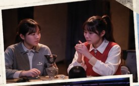
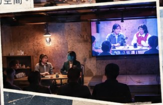
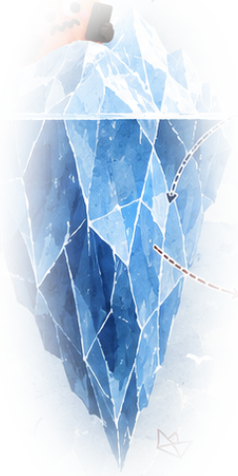
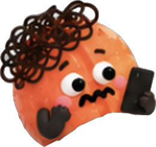
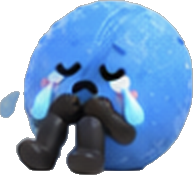
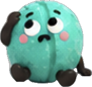
如果有人願意好好聽⋯⋯
理解，可以從一句話開始：
「你希望我先聽你說，還是一起想辦法？」
每一種情緒，都值得被看見。
每一個人，也都可以有自己的界線。
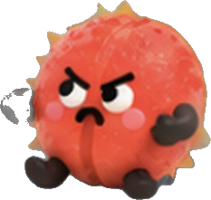
活動時程
所有場次都在展場左側課程區，開放所有人參加。
瑜珈專區
由 Inside Yoga Taipei 帶領。內觀流瑜珈結合瑜珈、音樂與呼吸，讓動作跟著音樂流動，從身體開始聽見自己。
授課老師、各場主題與報名方式，將在這裡更新。
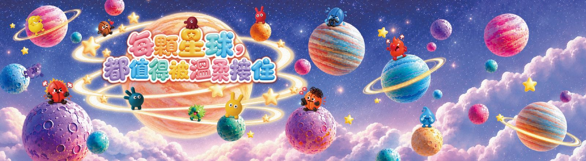
三大亮點
萌寵出動，超 Q 互動，留下可愛回憶。華山狗狗競速障礙大賽熱血徵召中！
寵物廠商｜碩達豐
丟沙包、套圈圈、投籃高手⋯⋯等懷舊遊戲，叫我第一名！
多樣攤位，互動體驗，逛一天都精彩。美食小吃、飲料、寵物與民生用品，還有身心靈塔羅攤位。
現場另有舞台節目，全天播放音樂。
線上徵稿
投稿你與毛孩最像的照片或影片，作品將上傳臉書與 IG 粉專，按讚加分享數最高者即可得獎。
扶輪社友限定。徵求你家最醜萌的瞬間！照片、影片都可以，按讚加分享最高，就有機會得獎。
參加方式
現場配置
B 區草地約 1,600 平方公尺，位於華山電影館西北側至荷花池之間。
| 攤位編號 | 內容 |
|---|---|
| 1–3 | 飲料攤位 |
| 4–13 | 遊戲互動攤位 |
| 14–18 | 寵物與民生用品 |
| 19 | 垃圾回收站 |
| 20–21 | 音響音控 |
| 22–26 | 生熟食攤位 |
| 27 | 醫療組 |
| 28–29 | 報到處 |
| 30–32 | 身心靈塔羅攤位 |